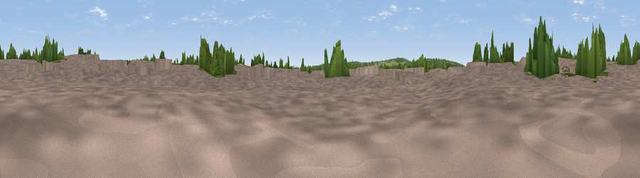

Viewpoint near Oxford
#43525 in England · top 92% of its area beats it · near OxfordThe view, rendered

A 360° render of this exact spot computed from the terrain model, tree cover and land cover — summer colours, afternoon light, calibrated against photographs of famous viewpoints. Real trees, hedges and buildings will differ in detail.
The panorama
Grey silhouette: terrain skyline in each direction (720 bearings, Earth curvature and refraction included). Dashed green: skyline with trees (+15 m) and buildings (+8 m) as obstacles. Blue strip: how far the ground is visible on each bearing.
Where the view opens
Wedge length = distance to the farthest visible ground on that bearing (vegetation-aware). Rings at 10, 25 and 50 km.
What fills the view
43% built-up · 32% woodland · 20% grassland · 5% cropland
Angular shares of the visible panorama (visual magnitude), not map area. Landscape diversity 0.53 (0–1 Shannon).
Key numbers
More beautiful places nearby
The staircase of upgrades: each row has a higher view potential than everything closer. Driving times are estimates from straight-line distance, calibrated against real road routing — check an actual route before setting out.
| Place | Direction | Drive | Score |
|---|---|---|---|
| Viewpoint near Oxford | E · 2 km | ~5 min | 27.5 |
| Millennium Beacon | WSW · 3 km | ~8 min | 55.6 |
| Viewpoint near Horspath | E · 5 km | ~11 min | 61.6 |
| Viewpoint near Swinford | WNW · 7 km | ~14 min | 64.5 |
| Round Hill | SSE · 14 km | ~26 min | 70.1 |
| Viewpoint near Watlington | SE · 23 km | ~37 min | 70.6 |
| Viewpoint near Lewknor | ESE · 23 km | ~38 min | 70.8 |
| Viewpoint near Lewknor | ESE · 23 km | ~38 min | 74.4 |
51.75194, -1.25811 · source: osm viewpoint · position refined by local search. Computed location — check access rights before visiting.